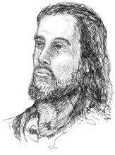

Nasıralı İsa Roma İmparatorluğu döneminde bir Yahudi olarak doğdu ve büyüdü. Hıristiyanlar onun Tanrı’nın oğlu ve çok uzun zamandır beklenen Mesih olduğuna inanır. Yeni Ahit’teki dört kanonik İncil onun yaşam öyküsünü anlatır.

İsa, Beytüllahim’de Hıristiyanlar’ın Kutsal Ruh tarafından hamile bırakılan bir bakire olduğuna inandığı Meryem’in oğlu olarak dünyaya gelmiştir. Meryem’in kocası olan Yusuf’tan İncil’de nadiren söz edilir. Bu yüzden İsa ergenliğe girmeden, Yusuf’un ölmüş olduğuna inanılır. İsa, Yusuf’un işi olan marangozluğu, otuzlarına geldiğinde öğretmeye başlamadan evvel meslek olarak benimsemiştir.
İsa, kısa hikâyeler, meseller, yanıltmacalar ve benzetmelerle öğretti. En ünlü öğretilerinden bazıları “Dağdaki Vaaz” ve “İyi Samiriyeliler” meselidir. Buna ek olarak hasta iyileştirmek ve hatta ölü diriltmek gibi mucizeler gerçekleştirdi. O zamanların dini anlayışına göre yanlış sayılan bir şey yaparak kadınlarla arkadaşlık kurdu ve kadınlara öğretim verdi.
Öğretileri boyunca İsa, günahın affedildiğinin yanı sıra Cennet Krallığının gelişini müjdeledi. Bu pek çok şekilde yorumlandı. Bazıları, İsrail Romalıların işgalinde olduğu için, İsa’nın siyasi özgürlükten bahsettiğine inandı. Ancak daha yaygın inanç, İsa’nın dünyanın sonunu haber verdiği yönündedir. Bu son, Tevrat’ta tarif edilen Mesih çağının başlaması olarak düşünüldü. İsa’nın Eski Ahit’te müjdelenen, kurtulma ve uyum çağı başlatacak olan Mesih veya kurtarıcı olduğuna inanıldı.
İsa’nın pek çok takipçisi olmasına rağmen, o düzenli olarak statükoya meydan okudu. İsrail’in Yahudi büyüklerinden yana memnuniyetsizliğini göstermek için Hamursuz Bayramı’nda Tapınak’ta bir tedirginlik yarattı. Yahudi yüksek mahkemesi Sanhedrin onu dine küfretmekle suçladı ve devlete karşı isyana tahrik etme hükmüyle onu Romalılara verdi. İsrail’deki Romalı lider Başkan Pontius Pilate, İsa’nın çarmıha gerilerek idam edilmesine karar verdi. Ancak Hıristiyanlar, gömüldükten üç gün sonra ilahi gücünün bir kanıtı olarak İsa’nın yeniden dirildiğine ve daha sonra cennete yükseldiğine inanırlar.
EK BİLGİLER:
1. Diocletian Çağı’nın 248. yılı olarak bilinen 532’de Hıristiyan rahip Dionysius Exiguus (500-560) İsa’nın doğum tarihini bulmaya çalıştı. Uzun araştırmalardan sonra, kesin tarihi belirledi ve bugün kullanımda olan Batı takvimini oluşturarak 25 Aralık MS 1 olarak yeniden tarih verdi. Ancak, o takvim yanlış bir hesap sistemine dayalıdır. Bugün İsa’nın 1. yıldan dört ila sekiz yıl daha önce doğduğuna inanılır.
2. “Christ” kelimesi “Mesih” anlamına gelen Yunanca bir ifadedir.